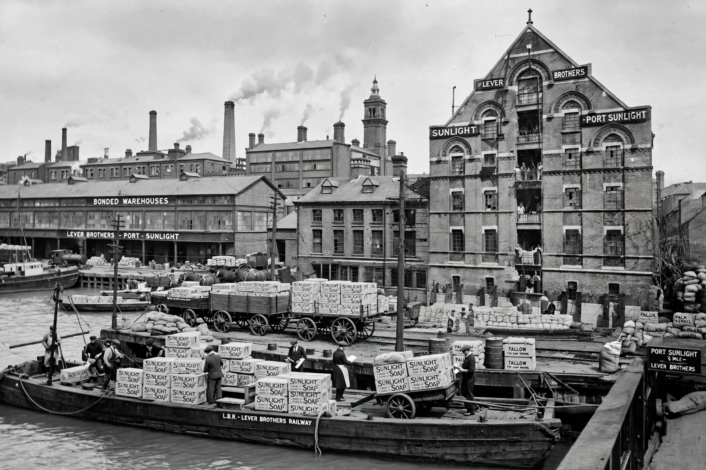

Lever Brothers was a British manufacturing company founded in 1885 by brothers William Hesketh Lever, 1st Viscount Leverhulme, and James Darcy Lever. It pioneered mass-market branded soap, notably Sunlight soap, and in 1929 merged with the Dutch Margarine Unie to form Unilever.

| Lever Brothers | |
|---|---|
| Founded | 1885, Warrington, England |
| Founders | William Lever; James Darcy Lever |
| Fate | Merged into Unilever, 1929 |
| Products | Sunlight, Lifebuoy, Lux soap |
From a Warrington grocery business, Lever built a factory at Port Sunlight on the Wirral with a model village for workers. Lever Brothers expanded globally using palm oil, with controversial concessions in the Belgian Congo and Solomon Islands, and became one of Britain's largest advertisers and multinational firms.